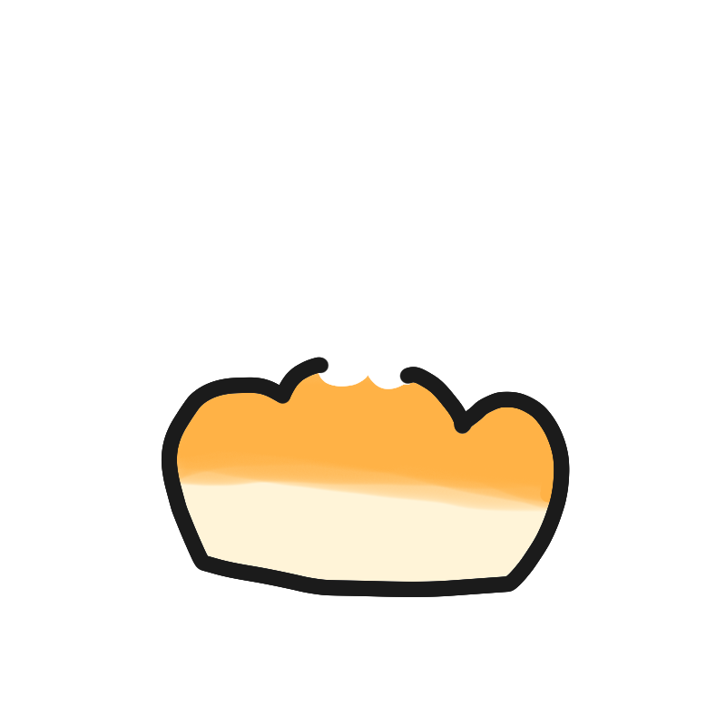

TODOUGH is a cute to-do app where completing tasks lets you bake bread and care for hungry cats. Organize your goals, stay focused with a timer, review completed tasks, and record your daily progress and notes-all in one place.
The Simplest & Cutest
To-Do App Ever!
Complete tasks & bake delicious bread
for hungry cats!

FAQ
Frequently Asked Questions
Yes. Core features, including basic task management and the focus timer, are available for free. Some features and the number of goals you can create are limited in the free version.
Premium includes:
- Unlimited goals
- Home screen widgets
- Five progress check options
- Daily notes
- Data backup and import
No. Premium is a one-time purchase with no subscription or recurring charges. Once purchased, you can continue using the Premium features without any additional payments.
Yes. If you use the same Apple ID or Google account used for the original purchase, you can restore Premium using the "Restore Purchases" option.
Your tasks, notes, and other app data must be transferred separately using the Premium backup feature. On your old device, open the menu and select "Backup." Save or share the backup file using email, AirDrop, or cloud storage. On your new device, install TODOUGH, select "Import" from the menu, and open the saved backup file.
Restoring your purchase does not automatically transfer your tasks or notes. Please create and save a backup before switching devices.
Use "Contact" in the app menu or email us at piyoticon@gmail.com. We'll get back to you as soon as possible.
Contact
Privacy Policy
Privacy Policy
Effective Date: August 10, 2026
This Privacy Policy applies to the ToDough mobile application provided by piyoticon ("Service Provider").
ToDough is designed to let you use the app without creating an account.
Information We Collect
ToDough does not require users to create an account or directly provide personally identifiable information to use the core features of the app.
Your goals, task history, baked notes, reminders, backup settings, language preference, and other app preferences are stored locally on your device unless otherwise stated within the application.
If you contact the Service Provider through the Contact screen, the message you write, your optional email address, reply preference, locale, platform, and send time may be transmitted so the Service Provider can read and respond to your request.
The application and its third-party service providers may automatically process limited technical information needed to provide app functionality, such as device and operating-system information, app version, purchase status, diagnostic information, and crash information.
ToDough does not sell your personal information.
Purchases
Premium access is processed as an in-app purchase through the Apple App Store or Google Play Store.
RevenueCat is used to verify purchases, manage premium entitlement status, and restore eligible purchases. ToDough does not directly collect or store your payment-card information.
Backup and Restore
If you use the backup feature, ToDough creates a backup file that may include your locally stored goals, completion history, repeat schedules, reminders, baked notes, and app preferences.
You choose where to save or share that backup file. Any external app or storage service you choose to use handles that file according to its own terms and privacy policy.
Importing a backup replaces the current local records on the device with the records from the selected backup file.
Third-Party Services
The application may use the following third-party services, each of which processes information according to its own privacy policy:
- Apple App Store
- Google Play Services
- RevenueCat
- Expo
Data Storage and Deletion
Information stored locally can be removed by deleting the relevant data within the application or uninstalling the application.
Backup files exported by you are stored wherever you choose to save or share them and must be deleted from those locations separately.
Some purchase, contact, diagnostic, and technical information may be retained by third-party providers or the Service Provider according to their own policies, operational needs, and legal obligations.
To request information about or deletion of personal data held directly by the Service Provider, contact piyoticon@gmail.com.
Children's Privacy
ToDough is not directed to children under 13, and the Service Provider does not knowingly collect personal information from children under 13.
If you believe that a child has provided personal information, please contact piyoticon@gmail.com.
Security
The Service Provider takes reasonable measures to protect information processed through the application. However, no electronic storage or transmission method is completely secure.
Changes to This Policy
This Privacy Policy may be updated from time to time. Any updates will be posted on this page with a revised effective date.
Contact Us
If you have any questions about this Privacy Policy, please contact us at piyoticon@gmail.com.
Terms of Service
Effective Date: August 10, 2026
These Terms of Service apply to the ToDough mobile application provided by piyoticon ("Service Provider").
By downloading or using ToDough, you agree to these Terms. If you do not agree, please do not use the application.
Use of the Application
ToDough is provided for personal use. You may not copy, modify, distribute, reverse engineer, or attempt to extract the application's source code.
All rights related to the application, including its design, code, characters, logos, and branding, belong to the Service Provider.
Premium Purchase
Some features may require a one-time in-app purchase. Prices and payment conditions will be clearly displayed before purchase.
Payments, cancellations, and refunds are processed according to the policies of the Apple App Store or Google Play Store.
Eligible purchases can be restored using the Restore Purchases option within the application.
Data and Privacy
ToDough may store and process information necessary to provide its features. Please review the Privacy Policy for more information about how data is handled.
You are responsible for maintaining the security of your device and any backup files you export.
The Service Provider is not responsible for data loss caused by device damage, application deletion, backup file deletion, unauthorized access, or circumstances outside its reasonable control.
Backup and Restore
The backup feature is provided to help you export and restore ToDough records.
Importing a backup replaces the current local records on the device with the data contained in the selected backup file.
Contact Us
If you have any questions about these Terms, please contact us at piyoticon@gmail.com.